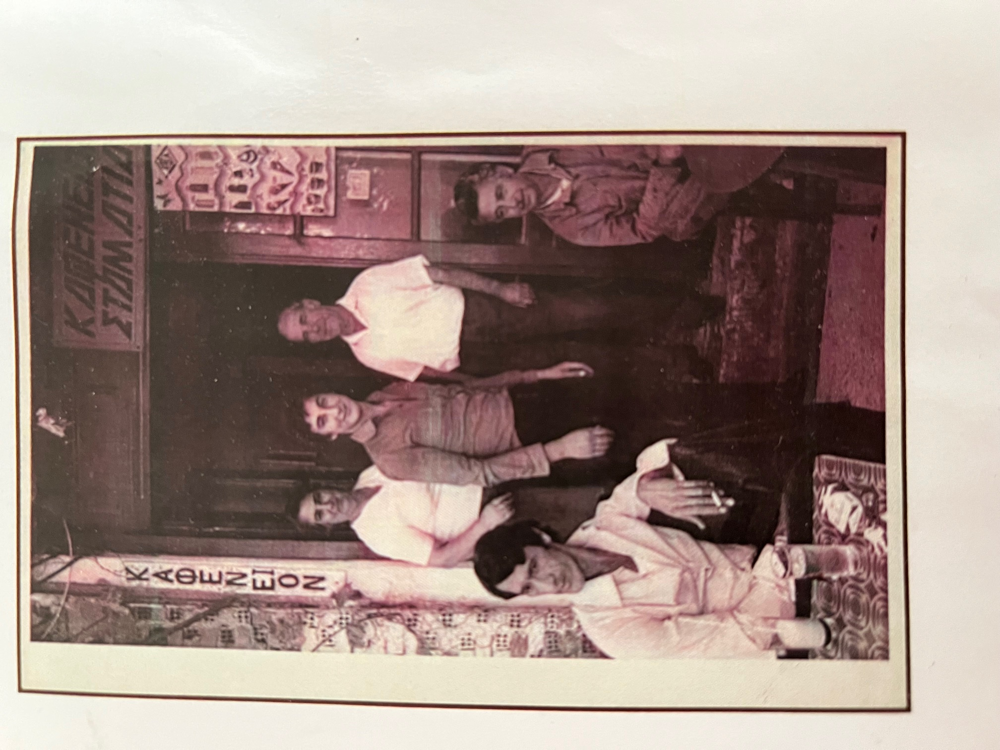

Οι Ρίζες μας (1973)
Η ιστορία μας ξεκινά το 1973, όταν η κυρία Σταματία Τσερέπα, μητέρα του Βαγγέλη, άνοιξε τις πόρτες ενός παραδοσιακού καφενείου στο Κοκκάρι. Ο Βαγγέλης μεγάλωσε μέσα σε αυτόν το χώρο, ανάμεσα στα τραπέζια και τη ζεστή φιλοξενία της εποχής. Στα τέλη της δεκαετίας του '80, πήρε τη μεγάλη απόφαση να αναλάβει την επιχείρηση, μεταμορφώνοντάς την σε ένα σύγχρονο All-Day Bar με έμφαση στα cocktails και την ποιότητα.
